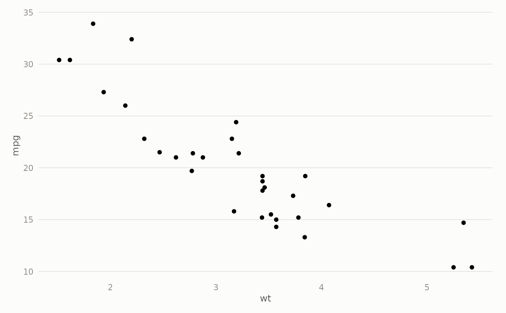

Every plancap plot uses one quiet theme, so the data is the only loud
thing on the page: a plain surface, hairline gridlines along the value
axis only, and text in three inks (primary, secondary, muted), never in a
series colour. mode = "dark" gives the same theme on a dark surface,
with colours stepped for it rather than inverted.
Usage
theme_capacity(
mode = c("light", "dark"),
base_size = 11,
base_family = "",
grid = "y"
)
scale_fill_capacity_d(..., mode = "light")
scale_colour_capacity_d(..., mode = "light")
scale_fill_capacity_c(..., mode = "light")
scale_fill_capacity_div(..., midpoint = 0, mode = "light")Details
Colour has one job per scale:
categorical (identity): eight hues in a fixed order, validated for colour vision deficiency between neighbours in both modes. Slots are never cycled: a ninth category is folded into "Other" (see
capacity_palette());sequential (magnitude): one hue, blue, light to dark (on the dark surface, dark to light, so small values recede);
diverging (gain or loss): blue for a gain and red for a loss, either side of a grey midpoint.
Examples
library(ggplot2)
ggplot(mtcars, aes(wt, mpg)) + geom_point() + theme_capacity()
